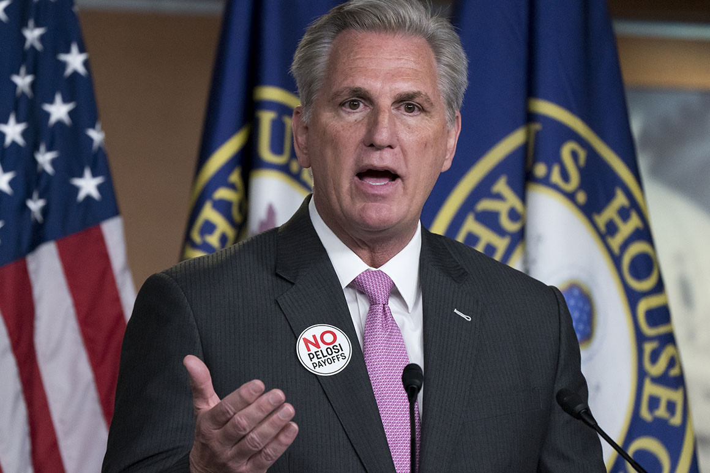

McCarthy decries ‘political stunt’ after troops visit lawmaker’s office
The message from the House Republican leader comes after several military leaders criticized Fox News host Tucker Carlson last week for mocking the administration’s efforts to recruit and retain female service members.
House Minority Leader Kevin McCarthy speaks during a news conference. | J. Scott Applewhite/AP Photo
House Minority Leader Kevin McCarthy is demanding that Defense Secretary Lloyd Austin stop troops from being used for partisan purposes after National Guard personnel accompanied a Democratic lawmaker as he visited a Republican member of Congress' office.
“Uniformed service members recently criticized a private citizen for his First Amendment rights, & today a Dem lawmaker used soldiers in a political stunt against a GOP member,” the California Republican on Twitter on Monday. “@SecDef Austin—This sets a dangerous precedent. It must stop now.”
McCarthy’s message comes after several military leaders Fox News host Tucker Carlson last week for mocking the administration’s efforts to recruit and retain female service members, including through updated hairstyle requirements and the introduction of maternity flight suits.
Some congressional Republicans jumped to Carlson’s defense. Rep. Ronny Jackson (R-Texas) that the military should not “be used as a political weapon,” and Sen. Ted Cruz (R-Texas) demanded a meeting with the Commandant of the Marine Corps to address the “systematic, public attacks” against the conservative commentator.

Rep. Marjorie Taylor Greene, R-Ga., speaks during a news conference on Capitol Hill in Washington, Friday, Feb. 5, 2021. (AP Photo/Susan Walsh) | AP Photo/Susan Walsh
Then, on Monday, The Hill posted footage of Michael San Nicolas — the Democratic House delegate representing Guam — escorting National Guard troops from the U.S. island territory to the Capitol office of Rep. Marjorie Taylor Greene (R-Ga.).
Speaking at the Conservative Political Action Conference last month, Greene falsely identified Guam as a foreign country, likening it to China, Russia and Middle Eastern nations. The remarks prompted San Nicolas to say he would reach out to her office.
The member of congress was not present when the territory’s troops came to her place of work Monday, according to video of the episode, which showed cordial exchanges between Greene’s legislative director, the service members and San Nicolas — who appeared to be carrying a basket of treats.
On Tuesday, San Nicolas argued that Republicans’ criticism of the visit was “unfounded” and denied “using military service members for political props.”
“I was taking my Guardsmen on a tour of the Capitol, and we stopped by several members’ offices, and we delivered some goodies,” San Nicolas told CNN. “Cookies should never be considered a political prop, and neither should our military. But goodwill is absolutely something that we wish to extend from Guam to everybody.”
A statement Tuesday from Maj. Gen. Esther Aguigui, adjutant general of the Guam National Guard, also suggested the troops would not be disciplined for their role in the incident.
“We appreciate Congressman San Nicolas’ efforts to represent our culture of Inafa’ Maolek, or bringing harmony, practiced here in Guam,” Aguigui said in a statement. “We also thank Congresswoman Greene for ultimately helping raise awareness of Guamanians as citizens of the United States, and our rich tradition of service and sacrifice to our nation.
“As a non-partisan entity, the Guam National Guard is here to continue this legacy of supporting and defending the Constitution of the United States and the freedoms it provides,” she said.
Nevertheless, some civil-military experts took issue online with the seemingly political show of force outside Greene’s office. Jim Golby, a senior fellow at the Clements Center for National Security at the University of Texas at Austin,tweeted Monday that it was “a disgusting and politicized use of National Guard personnel” by San Nicolas “for a partisan publicity stunt.”